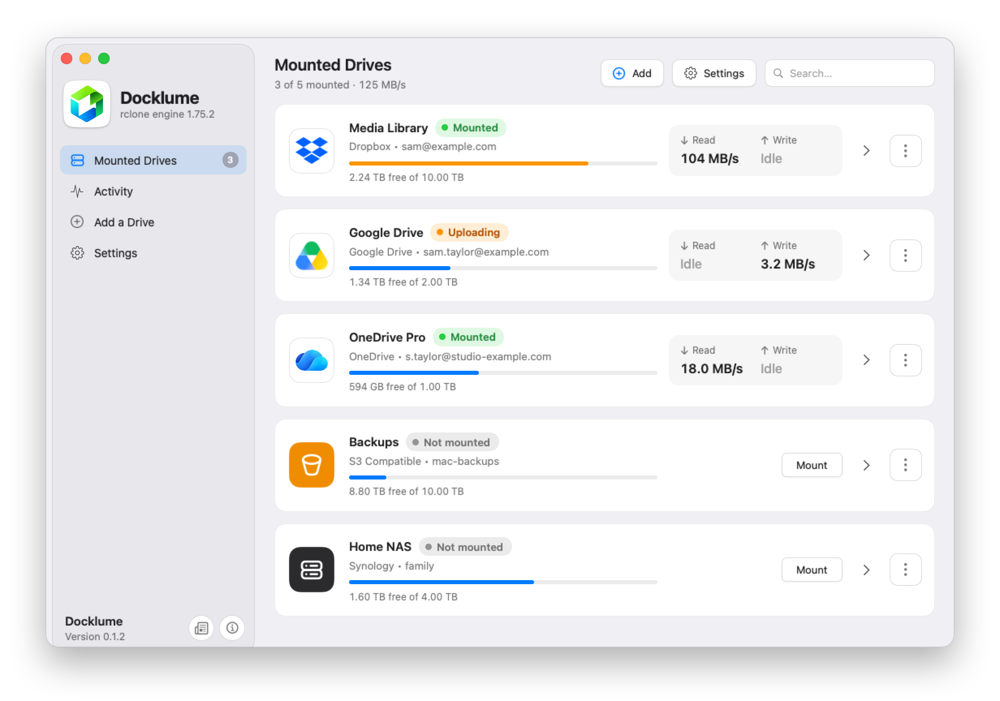
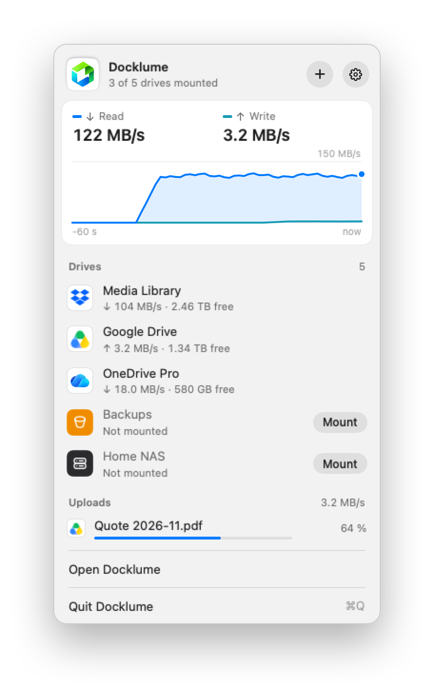
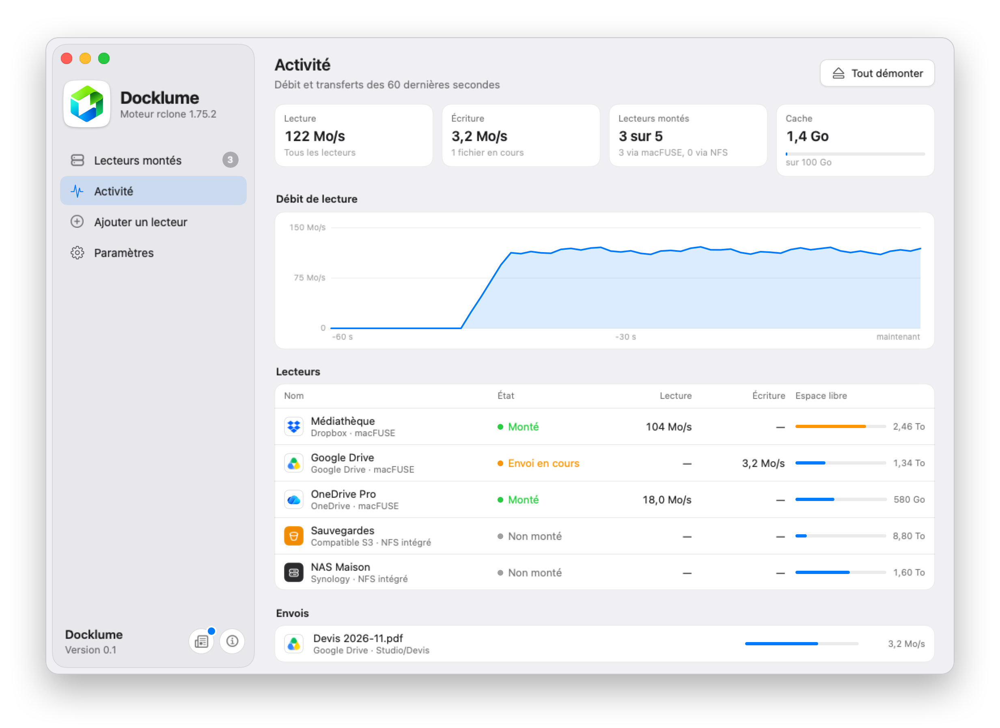

Your clouds,
in the Finder.
Docklume mounts Dropbox, Google Drive, OneDrive, S3 and your NAS as disks, in one click and at full speed.

Built for speed.
The rclone engine that comes with Docklume shares 16 connections between the files being read, the limit Dropbox accepts per account.
Everything a disk should do.
A native SwiftUI app, one rclone process per drive, settings measured rather than guessed.
macFUSE or NFS
macFUSE reads straight from the network, without writing anything to the disk. The macOS NFS client needs nothing installed.
A profile for each use
Streaming for Emby, Plex and Jellyfin, Documents for everyday work, Backup for large copies.
Live throughput
A chart in the menu bar, an Activity page and a speed test for each drive.
Your uploads protected
A file not uploaded yet stays in the cache, even when you clear it. Docklume warns you before unmounting or quitting.
No surprises
Automatic reconnection, speed limits applied on the fly, the disk protected when free space runs low.
Private
No server, no telemetry. Your credentials stay in rclone.conf, on your Mac.


Fifteen services, one gesture.
The remotes in your rclone.conf are imported at first launch.